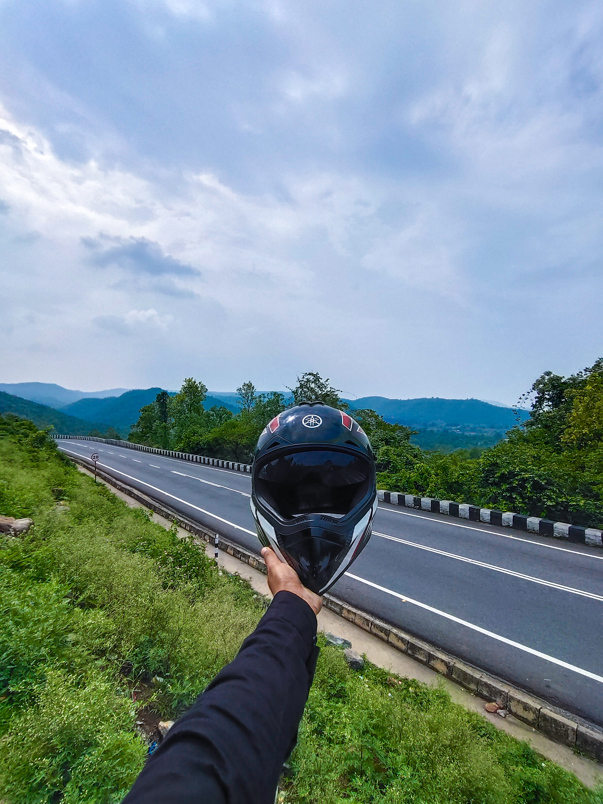
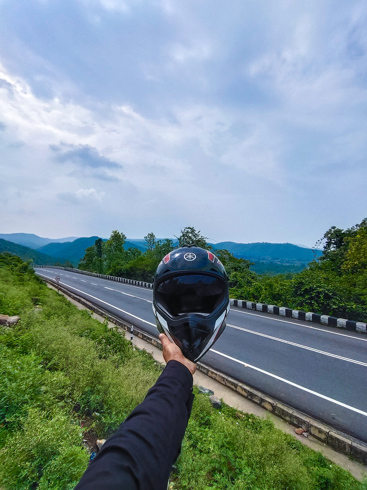
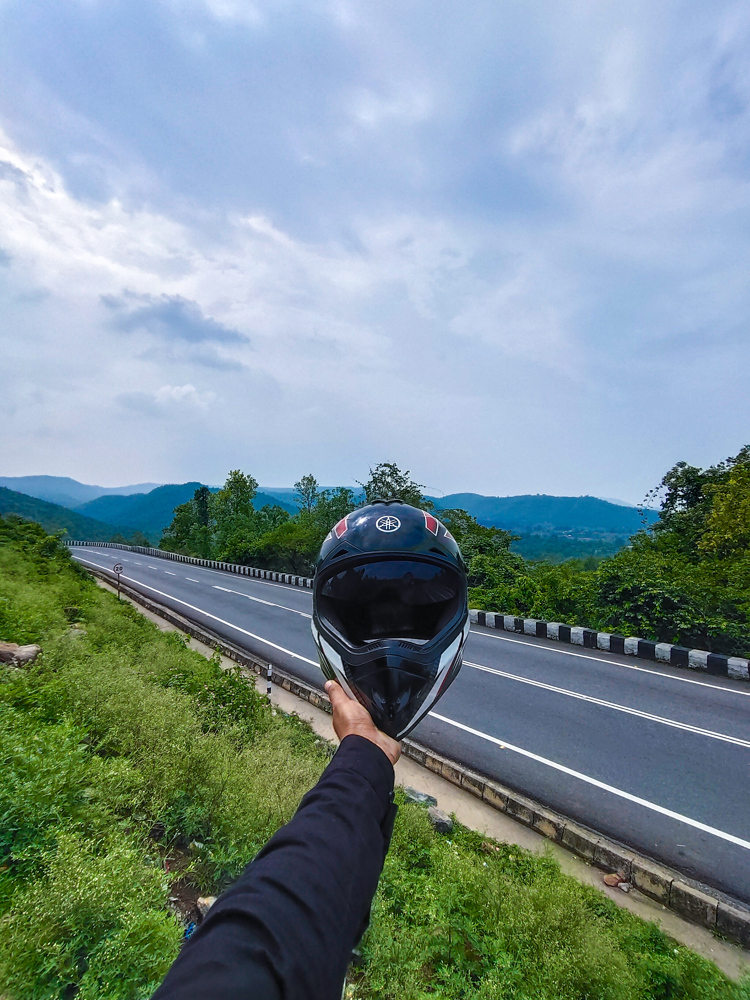
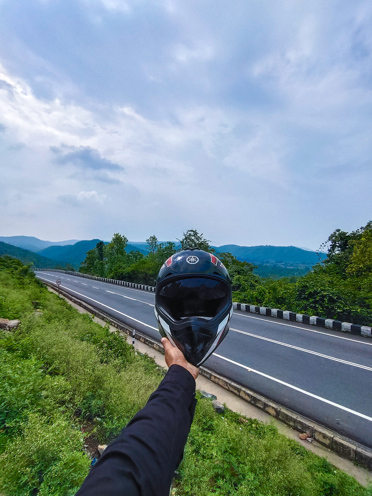

 

Forty kilometres away from Ranchi is the breath-taking Patratu Valley, with its lush greenery, mesmerising views and misty mountains. Visitors can see the Patratu Dam on one side and an expansive green belt on the other. Almost as beautiful as the valley is the drive to this picturesque destination, where one can catch glimpses of the sparkling water and winding roads. Another attraction is the Patratu dam that offers boating services from 9 am to 5 pm.
Location: Kanke Patratu Road, Ramgarh District.
Timing: Throughout.
Best time to visit: October to March.